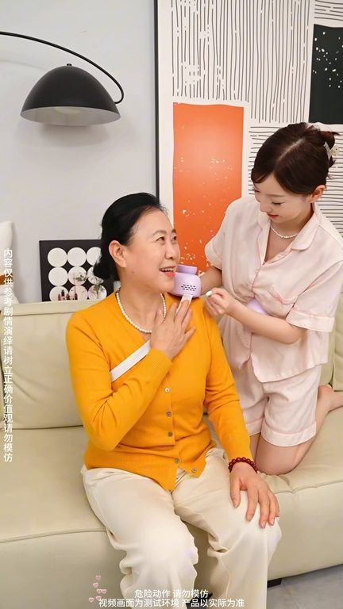
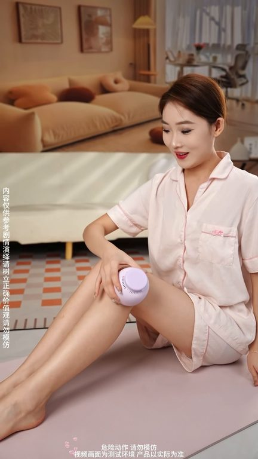

TOP 1 · 代表素材深度拆解
核心放量 稳健
视频为原始素材 HTTPS 链接；点击后加载，建议在网络环境良好时播放。
54.4万素材消耗
2.86%CTR
13.2%类目消耗占比
+0.44pp较类目均值
表现判断
该素材是类目内第 1 名，属于“核心放量”；CTR 高于类目均值。消耗体现承接规模，CTR 体现首屏与定向效率，两项应结合判断，不能仅以单指标下结论。
表达标签
口播三段式证据
开场钩子給大家看看有錢人用的愛酒罐長什麼樣
中段论证既然還把品質升級了新升級的無煙房燙設計
结尾转化既然還把品質升級了新升級的無煙房燙設計不管在哪裡久都不會影響到別人而且用起來非常的安全很舒適且操作也很簡單家裡的老人小孩都能輕鬆上手就連裡面用的愛柱都是南洋精選三年誠愛愛酒時總會有一股淡淡的愛香伴隨在你的身旁沒有體驗過的朋友抓緊時間來直播間拍一單試試吧
有效点
- CTR 2.86% 高于类目均值 2.41%，开场或人群指向具备点击优势
- 口播包含明确到手机制或直播间指令，转化路径较完整
迭代动作
- 保留当前高效钩子，复制 3 个变量版本：人物、首句和首帧分别单变量测试
- 中段每 5–8 秒补一次画面变化或证据点，避免同景口播造成信息疲劳
- 促销口径与资质信息保持同屏可验证，结尾只保留一个明确行动指令
合规关注
钩子建立 · 2.5s
场景/问题展开 · 19.2s

卖点证据 · 44.1s

转化收口 · 60.7s
查看完整口播摘要
給大家看看有錢人用的愛酒罐長什麼樣既然還把品質升級了新升級的無煙房燙設計不管在哪裡久都不會影響到別人而且用起來非常的安全很舒適且操作也很簡單家裡的老人小孩都能輕鬆上手就連裡面用的愛柱都是南洋精選三年誠愛愛酒時總會有一股淡淡的愛香伴隨在你的身旁沒有體驗過的朋友抓緊時間來直播間拍一單試試吧